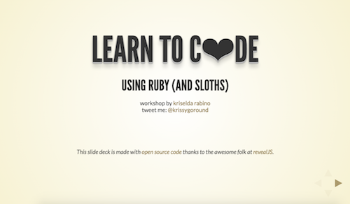

This workshop is given by software engineer Kriselda Rabino (@krissygoround).
It introduces basic coding concepts using the Ruby programming language and has a few too many sloth analogies in it due to Kris' unhealthy obsession with these slow, amusing creatures.
 View Slides